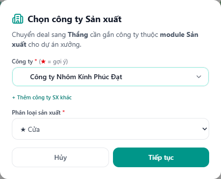
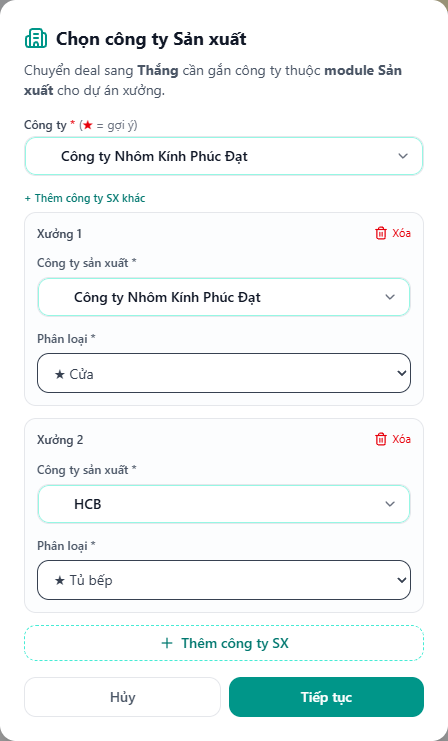
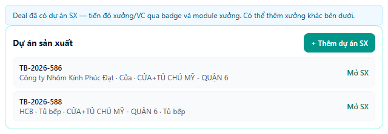
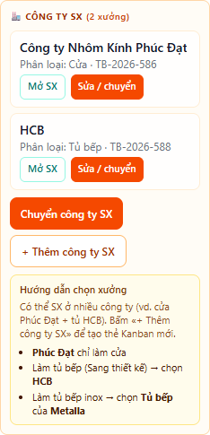
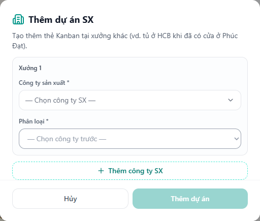
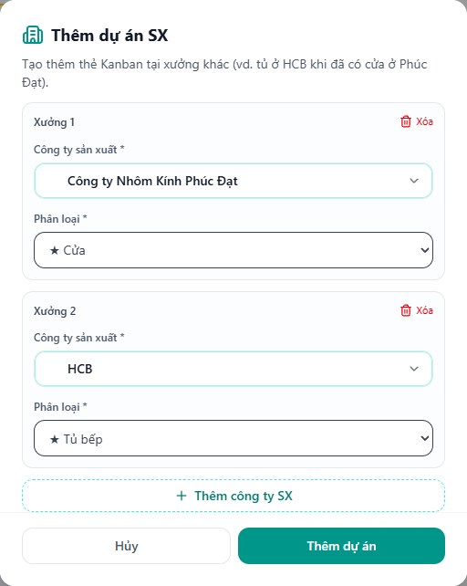
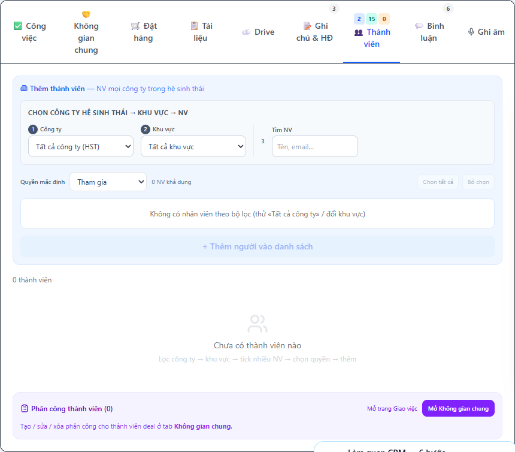
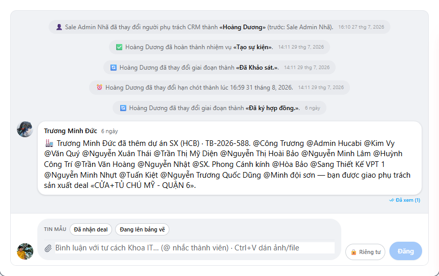

Chọn 1 hoặc nhiều xưởng khi thắng deal · Thêm xưởng sau trên chi tiết deal
Mẫu thực tế: DEAL-2026-963 — CỬA+TỦ CHÚ MỸ · Phúc Đạt (Cửa) + HCB (Tủ bếp)
v2
Cập nhật: 12/08/2026 · TuBep Pro · Ảnh chụp từ app thật
Tổng quan
Khi chuyển deal sang cột Thắng
→ Popup «Chọn công ty Sản xuất»
→ Có thể chọn 1 xưởng, hoặc bấm «+ Thêm công ty SX khác» để chọn nhiều
→ Hệ thống tạo dự án SX riêng từng xưởng (mã TB-…)
Sau đó (nếu cần thêm xưởng):
Chi tiết deal → «+ Thêm dự án SX» / «+ Thêm công ty SX»
→ Chọn công ty + phân loại → Thêm dự án
Ví dụ điển hình: cửa làm tại Phúc Đạt, tủ bếp làm tại HCB (hoặc tủ inox tại Metalla). Deal CRM vẫn là một; mỗi xưởng có thẻ Kanban SX riêng.
Bước 1 — Chọn nhiều xưởng khi chuyển Thắng
1.1. Chuyển deal sang cột Thắng
Mở chi tiết deal (hoặc Kanban Deals).
Bấm giai đoạn 🎉 Đã ký hợp đồng. (cột Thắng) trên stepper / Kanban.
Hệ thống mở popup bắt buộc chọn công ty sản xuất:

Hình 1 — Popup «Chọn công ty Sản xuất» khi chuyển sang Thắng
Ghi chú: (1) Chọn công ty (Metalla / HCB / Phúc Đạt…) · (2) Phân loại (vd. Cửa) ·
(3) Nút + Thêm công ty SX khác · (4) Hủy / Tiếp tục
1.2. Thêm xưởng thứ 2 trong cùng popup
Bấm + Thêm công ty SX khác.
Xuất hiện Xưởng 1 và Xưởng 2.
Với mỗi dòng: chọn công ty + phân loại (không trùng cặp công ty–phân loại).
Bấm Tiếp tục (sau khi đã kiểm tra đúng) — hệ thống tạo dự án từng xưởng.

Hình 2 — Đã thêm Xưởng 2 (vd. Phúc Đạt + HCB) trước khi xác nhận
Nhớ: Phúc Đạt chỉ làm cửa · Tủ bếp (Sang thiết kế) → HCB · Tủ bếp inox → Metalla (phân loại Tủ bếp).
Bước 2 — Xem deal đã có nhiều dự án SX
Trên đầu trang chi tiết deal, khối Dự án sản xuất liệt kê mọi thẻ xưởng đã gắn:

Hình 3 — DEAL-2026-963: TB-2026-586 (Phúc Đạt · Cửa) và TB-2026-588 (HCB · Tủ bếp)
Ghi chú: (1) Banner «có thể thêm xưởng khác» · (2) Nút + Thêm dự án SX ·
(3) Danh sách dự án + Mở SX
Cột trái (sidebar) cũng hiển thị 🏭 CÔNG TY SX (2 xưởng) kèm hướng dẫn chọn xưởng và nút thêm:

Hình 4 — Sidebar: danh sách xưởng, «+ Thêm công ty SX», gợi ý Phúc Đạt / HCB / Metalla
Bước 3 — Thêm xưởng sau (khi đã thắng)
Mở chi tiết deal đã có ít nhất một dự án SX.
Bấm + Thêm dự án SX (đầu trang) hoặc + Thêm công ty SX (sidebar).
Trong popup: chọn công ty + phân loại; có thể bấm Thêm công ty SX để tạo nhiều dòng cùng lúc.
Bấm Thêm dự án — NV các xưởng liên quan được thông báo trên bình luận deal.

Hình 5 — Popup «Thêm dự án SX»: chọn công ty (Metalla / HCB / Phúc Đạt…)

Hình 6 — Trong popup: Xưởng 1 + Xưởng 2 (nút «Thêm công ty SX»)
Bước 4 — Thành viên & bình luận
4.1. Thành viên
Tab Thành viên: CRM giữ người chịu trách nhiệm; nhân viên xưởng thường vào theo setup module SX. Có thể thêm tay nếu cần.

Hình 7 — Tab Thành viên trên deal nhiều xưởng
4.2. Bình luận
Tab Bình luận: theo dõi trao đổi CRM ↔ xưởng. Khi cần giới hạn người xem, dùng chế độ riêng tư (🔒) nếu có trên form đăng.

Hình 8 — Tab Bình luận deal (thông báo thêm xưởng / trao đổi hồ sơ)
Xử lý sự cố nhanh
Tình huống
Cách xử lý
Không thấy nút «+ Thêm dự án SX»
Deal chưa có dự án SX — cần chuyển Thắng + chọn xưởng trước.
Lỗi trùng công ty + phân loại
Đổi phân loại hoặc bỏ dòng trùng trước khi xác nhận.
Chọn nhầm xưởng
Sidebar → «Sửa / chuyển» hoặc «Chuyển công ty SX» trên dòng tương ứng.
Không thấy thẻ trên Kanban SX
Lọc đúng công ty xưởng + phân loại; mở bằng nút «Mở SX» từ deal.
Nhớ nhanh: Một deal CRM · nhiều dự án SX · mỗi xưởng một thẻ Kanban · bàn giao VC theo từng xưởng.
TuBep Pro · docs/huong-dan-multi-sx-deal/ · 12/08/2026